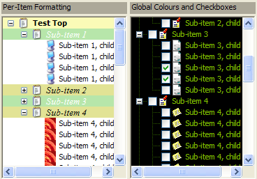
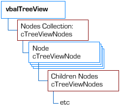
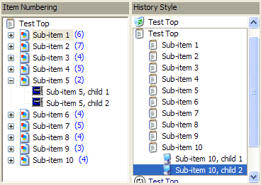

VB5 TreeView Control (83K)
VB5 TreeView Control (83K)
 VB5 TreeView Demonstration (51K)
VB5 TreeView Demonstration (51K)
 VB5 TreeView Full Source (176K)
VB5 TreeView Full Source (176K)
 VB6 TreeView Control (82K)
VB6 TreeView Control (82K)
 VB6 TreeView Demonstration (45K)
VB6 TreeView Demonstration (45K)
 VB6 TreeView Full Source (170K)
VB6 TreeView Full Source (170K)
 Bugs: 5 / 19
Bugs: 5 / 19
 Issues: 1 / 4
Issues: 1 / 4
 Questions: 1 / 1
Questions: 1 / 1
 16 Apr 2004
16 Apr 2004
Drag enhancements and bug fixes. See BugTrak for full details.
 Ole Guid and interface definitions (OleGuids.Tlb)
Ole Guid and interface definitions (OleGuids.Tlb)
 Using the System Image List with (and without) vbAccelerator Controls
Using the System Image List with (and without) vbAccelerator Controls
 Subclassing Without The Crashes
Subclassing Without The Crashes
 vbAccelerator ImageList Control and Class v2.0
vbAccelerator ImageList Control and Class v2.0
 IShellFolder Extended Type Library Version 1.2 (ISHF_Ex.Tlb)
IShellFolder Extended Type Library Version 1.2 (ISHF_Ex.Tlb)

vbAccelerator TreeView Control
A fully-featured TreeView with enhanced Drag-Drop support
This article provides a new TreeView control that provides an alternative to the standard version provided with VB. Enhancements include much wider support for item colours and formatting, better drag-drop support including node auto-expand and scrolling, styles to support numbering items and an IE-style history mode and an improved object model.
About the TreeView control
This control is a significantly revised version of the XuiTreeView control written by Dan Litwin which is still available on the legacy version of the site. This time around the control has an object model, not to mention many bug fixes and enhancements over the last version.
This control has a similar object model to the standard VB TreeView, but with a notable exception. In the VB TreeView, the Nodes collection is the collection of all in the control. In this control, the Nodes collection refers to the collection of nodes at a particular level. In this way the object model is more similar to the DOM interfaces provided in XML parsers. This seems a more natural way to look at the TreeView, since now each Node has a Children object which can be used to access just the child nodes of that node.
The diagram below shows the object model in the control.
TreeView Object Model
Here's a brief tour of the features:
The Control
The vbalTreeViewCtl provides access to the object collections, raises events and lets you configure the visual properties of the control. The new and changed features are:
- ImageList
This allows you to associate a handle to an image list with the control rather than just an ImageList object. This allows you to use an System Image List as a source of icons, as shown in the demo. Please note that MSCOMCTL.OCX (VB6 Windows Common Controls) ImageLists are not supported as the hImageList handle returned by this object is incorrect. This may be resolved in the future by an update from Microsoft (see KB).
- DragAutoExpand
Gets/sets whether nodes will auto-expand when you are dragging over them.
- DragStyle
Gets/sets the drag style of the TreeView. The default drag style is etvwInsertMark. Using this mode, the exact order of nodes within a tree can be controlled. This is useful when using a Tree to represent hierarchies where ordering is important, such as the Favourites dialog. Alternatively, the drag style can be set to etvwDropHighlight, which only allows you to drop items on a particular node in the tree. This mode is useful when the order of items in a particular branch isn't either fixed, or isn't important, such as views of the file system.
- DragInsertNode, DragInsertAbove
During a drag operation, DragInsertNode returns the node which has the insert point, if any, and DragInsertAbove returns whether the insert location is above or below this node.
- NodeFromDragData
When an OLE Drag-Drop operation is performed using a Node, the control adds text format and private internal formats to the drag Data argument. The Node associated with this data can be extracted using this function. Note that any instance of the TreeView control can be used, not just the source of the node that is being dragged. If the node is from another control, it is located and the information is populated by the owner.
- NoCustomDraw
Gets/sets whether custom-draw is disabled for the control. When custom draw is disabled, the display is faster, but you cannot configure colours or formatting on a per-item basis. Note that by default this is True.
- ShowNumber, HistoryStyle
Get/set two new styles which are provided for the control. In both cases the NoCustomDraw flag must be set to False in order for the mode to draw. When the ShowNumber mode is set, any ItemNumber value above zero associated with a node is displayed next to the item in brackets, like Outlook. If HistoryStyle is set, then the control renders a border around the selected node tree in the same way that IE does in the History bar. These styles are mutually exclusive.
TreeView control with Number and History styles applied
- Colour properties
When NoCustomDraw is set False, you can set a number of default colours for the rendering of the control (these can also be overridden for individual items). In all cases except BackColor, ForeColor and LineColor setting a property to -1 will mean the default colours are used.
The list of colours supported are:
- BackColor
Gets/sets the background colour of the control. Works regardless of the setting of the NoCustomDraw flag. - ForeColor
Gets/sets the foreground colour of the control. Works regardless of the setting of the NoCustomDraw flag. - LineColor
Gets/sets the colour of the lines shown in the control. Works regardless of the setting of the NoCustomDraw flag. - MouseOverForeColor, MouseOverBackColor
Gets/sets the colour of an item when it is highlighted using hot-tracking. - SelectedForeColor, SelectedBackColor
Gets/sets the normal colour of an item when it is selected. - SelectedMouseOverForeColor, SelectedMouseOverBackColor
Gets/sets the colour of an item when it is selected and the mouse is over. - SelectedNoFocusForeColor, SelectedNoFocusBackColor
Gets/sets the colour of an item when it is selected and the control is out of focus.
- BackColor
cTreeViewNodes
This behaves int the same way as the standard version except as noted before a collection only contains the children of the parent node. Also For..Each is not supported.
cTreeViewNode
This object is largely compatible with the standard VB Node object, with these enhancements:
- Children
Returns a cTreeViewNodes collection containing the children for this node, if any, otherwise Nothing. - MoveNode
Moves this Node to another position in the tree. The new location is specified by a relative node and the relationship of the new position to it. - InsertNodeBefore, InsertNodeAfter
Adds a new node and inserts it either before or after this node. These are convenient alternatives to the cTreeViewNodes properties. - AddChildNode
Adds a new child node to this node. This is a convenient alternative to the cTreeViewNodes collection when building up a tree recursively. - StartEdit, EndEdit
These methods allow you to programmatically control editing of nodes. - NoCheckBox
Gets/sets whether this node has a checkbox in a TreeView with the Checkboxes style. - ShowPlusMinus
Gets/sets whether the plus/minus button is shown for this item, regardless of whether the item contains children. This is useful when creating a TreeView that is dynamically populated - in the standard TreeView you have to add a dummy item to the node to allow it to be expanded, here you can simply set ShowPlusMinus to True. - Colour Properties
The same set of colours that can be customised globally for the TreeView control can also be customised for an individual node. - Font
Gets/sets a specific font used to render this node, or Nothing to use the default font. - ItemNumber
Gets/sets a number to display in brackets next to the node when the control has the ShowNumbers style. Otherwise, it can be used to store data against the item. - Index
Gets the 1-based index of this item within its parent tree.
Conclusion
This TreeView control provides a comprehensive replacement for the standard VB TreewView with enhanced formatting, drag and drop and style support. Other articles in this section provide more details of how to use drag-drop, show Shell folders and files and customising the behaviour and display of the TreeView.